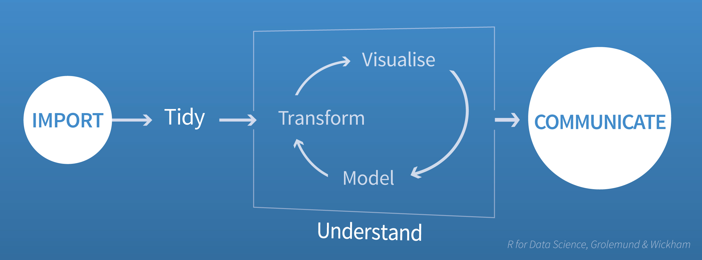

2020-04-22
Organizations across the modern business world recognize the critical importance of Data Science for competitive advantage. That recognition has driven Glassdoor to rate Data Scientist as one of the 25 top paying jobs in America in 2020.
However, many organizations struggle to put these data scientists’ knowledge to work in their businesses where they can actually have an impact on success. We hear data scientists say, “The business can’t really tell us what they want, so they waste a lot of our time.” And in return, business people often say, “Our data scientists are really smart, but the applications they build too often fall short of what we’re looking for.”
The problem here is that data scientists and business people speak very different languages. Specifically, they struggle to understand each other around:
Both points of view are valid – they just aren’t the same, which creates a communications gap.
“An approximate answer to the right question is worth a great deal more than a precise answer to the wrong question.” –John Tukey
These communications gaps are part of a larger challenge of defining (and refining) the problem. While your business stakeholder might believe they have a clear definition of the problem they are trying to solve, they may not understand whether the data is available, how complex the modeling might be or how long building a model on large data might take, or what adjacent problems might be potentially more valuable and/or far simpler to solve. So, before starting the development process, the data scientist and the business stakeholder must explore and discuss the problem in enough detail to create a realistic development plan. And while data scientists and business people may struggle to understand each other’s words, they usually can agree if they can just see a working model. The difficult part is getting to that working model.
One way to get to agreement is to break down the project into simpler pieces and get agreement on each piece before moving on to the next. Garrett Grolemund and Hadley Wickham propose the following process below in their book R for Data Science. This process isn’t specific to any technology such as R or Python. Rather it’s a way to get your data scientist and business sponsor to come to consensus on what question they are attacking.

The four steps are
Many data scientists (or at least those who have read R for Data Science) use this type of process for doing analysis. However, fewer think of using it as a communications tool to ensure they are answering the proper business questions. You can help your data scientists apply this approach; encourage them to:
Once the application satisfies both your data scientists and business stakeholders, you’ll want to share the finished application with the wider business community. One of the easiest ways to do this is through RStudio Connect, which can help you rapidly refine your content during the prototyping phase, and share it widely and consistently in the production phase. We will talk more about that in our next blog post. Meanwhile, to learn more about how Connect can add push-button publishing, scheduled execution of reports, and flexible security policies to your team’s data science work, please visit the RStudio Connect product page.